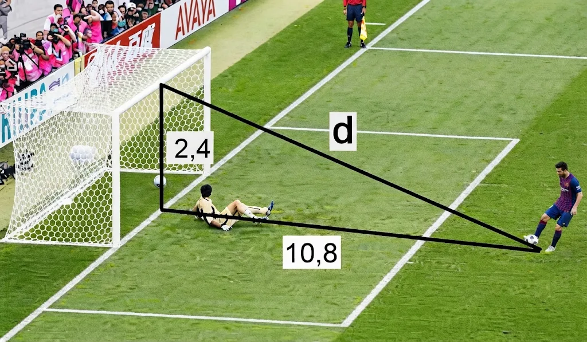
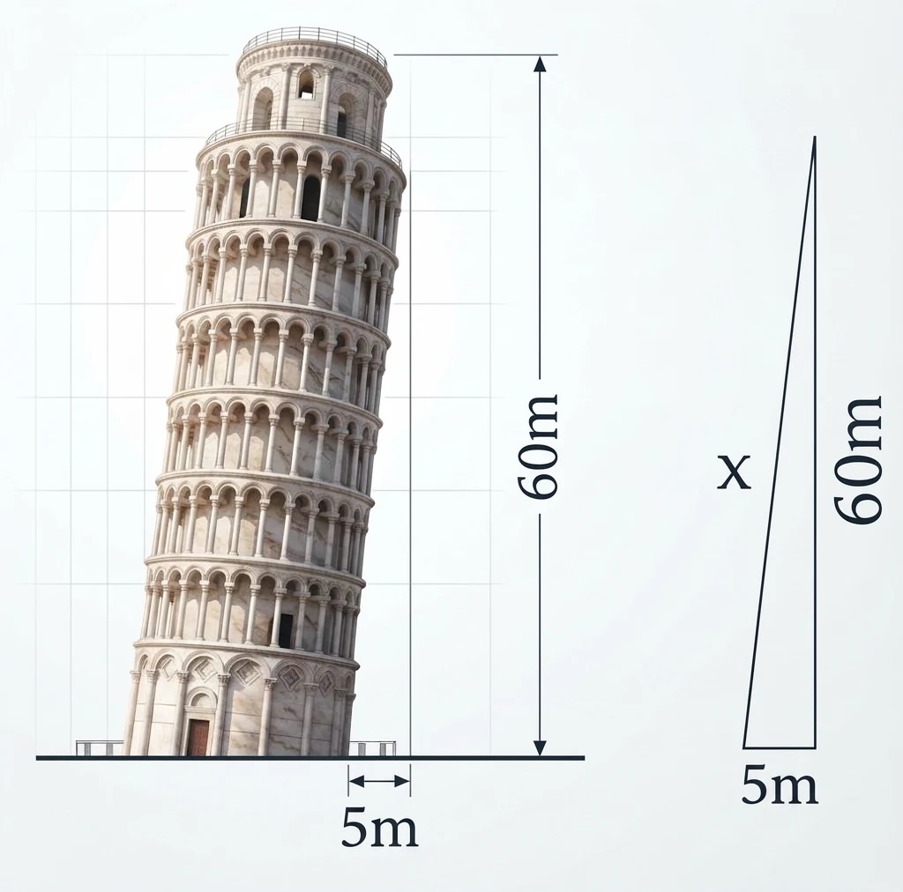
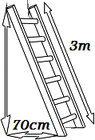
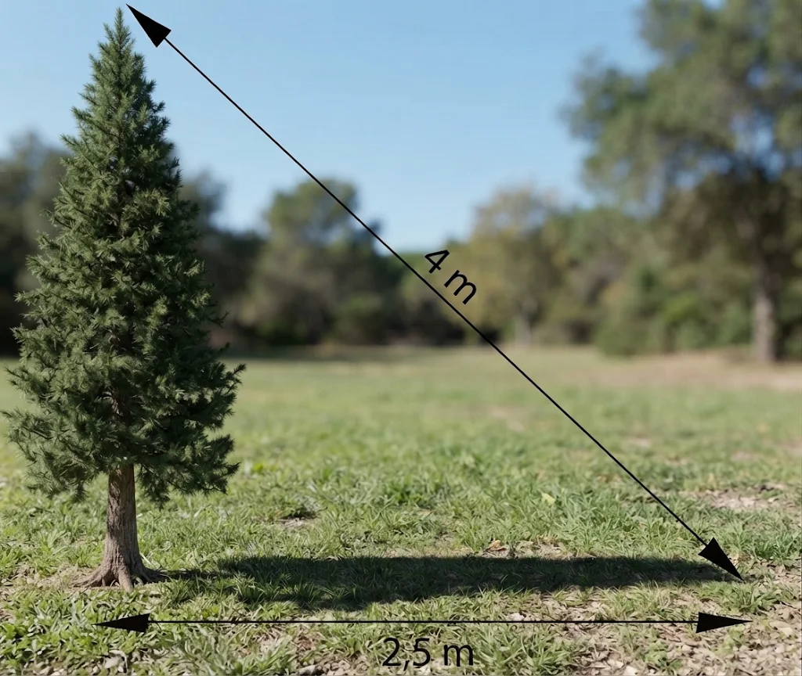
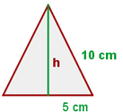
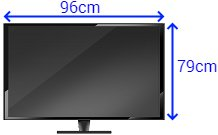

Hipotenusa
Encuentra la longitud de X en el siguiente triángulo.

Cateto
Si la hipotenusa de un triángulo rectángulo mide 2 cm y uno de sus lados mide 1 cm, ¿cuánto mide el otro lado?
Fútbol
La altura de una portería de fútbol reglamentaria es de 2,4 metros y la distancia desde el punto de penalti hasta la línea de gol es de 10,8 metros.
¿Qué distancia recorre un balón que se lanza desde el punto de penalti y se estrella en el punto central del larguero?

Torre de Pisa
La Torre de Pisa está inclinada de modo que su pared lateral forma un triángulo rectángulo de catetos 5 metros y 60 metros. ¿Cuánto mide la pared lateral?

Escalera
Calcular la altura que podemos alcanzar con una escalera de 3 metros apoyada sobre la pared si la parte inferior la situamos a 70 centímetros de ésta.

Árbol

Al atardecer, un árbol proyecta una sombra de 2,5 metros de longitud. Si la distancia desde la parte más alta del árbol al extremo más alejado de la sombra es de 4 metros, ¿cuál es la altura del árbol?
Área
Hallar el área del triángulo equilátero:

Los ciclistas
Dos ciclistas salen a dar un paseo al mismo tiempo, el uno se va hacia el sur y el otro hacia el oeste. Después de media hora, el ciclista que fue hacia el sur ha viajado 7 kilómetros y el ciclista que fue hacia el oeste ha viajado 8.5 kilómetros.
En ese momento, ¿cuál es la distancia más corta entre ambos?
TV

La medida que se utiliza en los televisores es la longitud de la diagonal de la pantalla en unidades de pulgadas. Una pulgada equivale a 2,54 centímetros:
1'' = 2,54 cm
Si David desea comprar un televisor para colocarlo en un hueco de 96x79cm, ¿de cuántas pulgadas de diagonal debe ser el televisor?
.png)
Tirolina
Una tirolina de 26 m de longitud está atada a dos postes que distan 24 m. Si Manuela sale desde el primer poste a una altura de 50 m, ¿a qué altura llegará en el segundo poste?
Salto de trampolín
Un clavadista (saltador de trampolín) está entrenando en una piscina con una plataforma. Cuando realiza el salto, cae a una distancia de 1 metro de la plataforma sumergiéndose 2,4 metros bajo el agua. Para salir a la superficie, bucea hasta el final de la piscina siguiendo una línea transversal de 8,8 metros de longitud.
Si la longitud desde la parte superior de la plataforma al lugar en donde emerge del agua es de 11,2 metros, ¿cuál es la altura de la plataforma (desde el nivel del agua)?